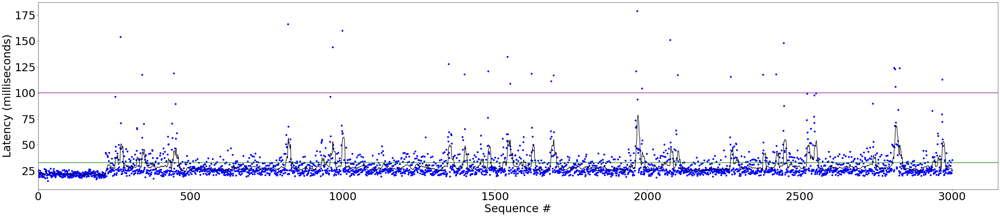
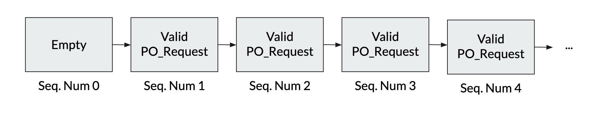

Meet the team:
Our initial approach is to benchmark the Prime and Spines components that are integrated into the Spire System for latency and throughput. With this we can get a healthy baseline, to then be able to judge the effectiveness of an attack.
Mid-Semester PresentationWe conducted our attacks from the inside, with the assumption that we had access to one compromised replica. With this compromised replica we target the current leader with excessive ping messages to slow that leader’s round trip time. The delayed round trip time then forces a leader change as the leader is determined to be too slow by the other replicas. This process of changing leaders when too slow is mandated by the Suspect Leader Protocol of the Prime system. Ping messages while effective in slowing down the leader as they require it to reply, slow the compromised replica down because it must process the pong messages received from the leader. This causes the new leader message, which updates the current leader for a replica, to be pushed behind thousands of pongs. So to keep up with the current view of the leader the compromised replica then filters out all messages except pings and leader changes. This is successful at causing the leader to change continuously while the compromised replica is running, raising the overall latency of the system to an average of around 31 ms. Combined with a proactive recovery of a replica this attack can no longer force a leader change but can raise the acceptable latency for a leader. This means that while the compromised replica targets the leader and is ineffective at forcing a change it can increase the average round trip time of a transaction to be around 40 ms with some percentage of messages having an rtt above 100 ms. We have also been attempting to divide resources of the compromised replica between the current and next leader to reduce the time between the leader changing and the compromised replica’s knowledge that the leader has changed. From the inside with 1 compromised replica, we are able to consistently force a leader change which raises the average round trip time of a transaction.
Our attack is based on a Prime's preorder protocol which allows for a compromised replica to consume an arbitrary amount of memory on the correct replicas. As part of the preoder protocol, when a replica recieves an update from a client, they inform all the other replicas of that update and bind it to a unique sequence number. All other replicas store those updates until they are globally ordered and executed. The flaw in protocol is that correct replicas do not place any bound on the number of updates they will store from any other replica. Generally, this is not an issue because updates are ordered and executed in a timely fashion which allows valid replicas to reclaim their memory by flushing old updates. However, a compromised replica can exploit the protocol in the following way. In order to maintain correctness, client updates must be executed in order. Therefore, if a faulty replica withholds an early sequence number, correct replicas must store all following updates because they will be unable to execute them before receiving the earlier (withheld) update. By continuing to send updates, the faulty server forces the valid replicas to store an arbitrary amount of data which causes them to becomes unresponsive when they run out of RAM. Our current implementation of the attack consumes 0.02GB of memory per second.
